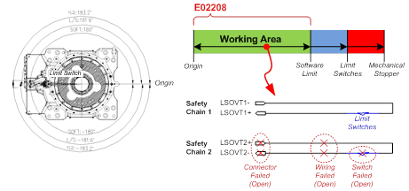

기존 에러코드: E0002 하드웨어 리밋스위치 작동중
1.1.30.1. 개요
로봇이 소프트 리밋 영역을 이탈하지 않았음에도 로봇 각 축의 동작영역 끝에 설치한 리밋스위치가 동작한 것으로 입력되고 있습니다. 그런데 안전체인 1의 입력과 안전체인 2의 입력상태가 다르므로 점검이 필요합니다.
1.1.30.2. 원인 및 점검방법
|
소프트 리밋을 넘지 않은 상황에서 하드웨어 리밋스위치 작동이 검지되는
스위치나 배선계통에 문제가 있으므로 점검하십시오. |

그림 1.127 E02208 본체 리밋SW 입력불일치(안전체인2 OFF) 발생
소프트 리밋을 넘지 않은 상황에서 하드웨어 리밋스위치 작동이 검지되는 비정상적인 상황입니다. 안전체인2가 개방(open)되어 문제가 발생한 것입니다. 이와 관련한 스위치나 배선계통을 점검하십시오.
n 하드웨어 리밋 스위치 고장 : 스위치의 파손이나 어떠한 이유에서 개방(open)됨.
n 배선 : 배선이 끊겼거나 손상을 입어 접촉불량 발생.
n 커넥터 : 커넥터가 빠졌거나 손상을 입어 접촉불량 등의 단선문제 발생.
상세한 점검 포인트는 “하드웨어 리밋 스위치 점검방법” 항을 참조하십시오.